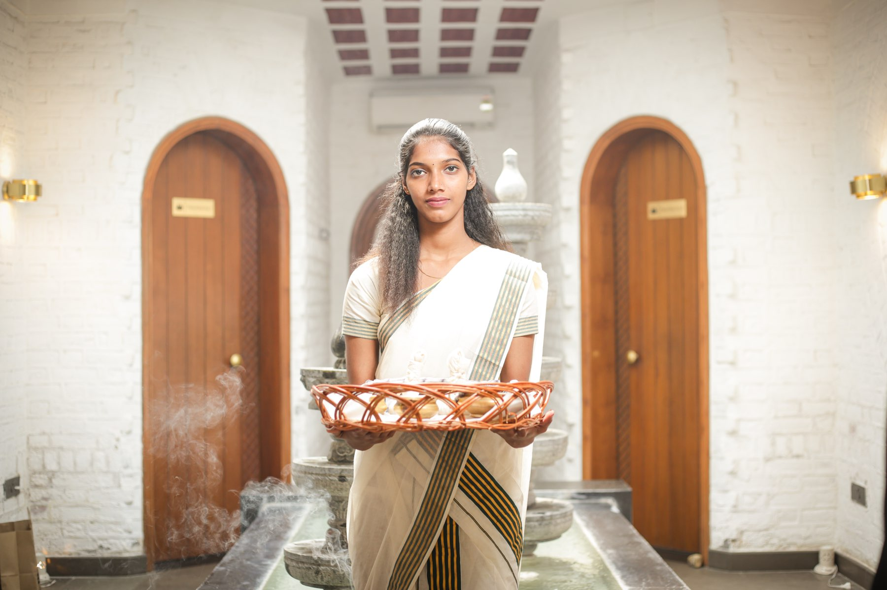

Kairali Ayurvedic Group
Classical Kerala Ayurveda from the family behind the NABH-accredited Ayurvedic Healing Village — in your city, or by online consultation.
The Kairali network
From Kerala to the world
